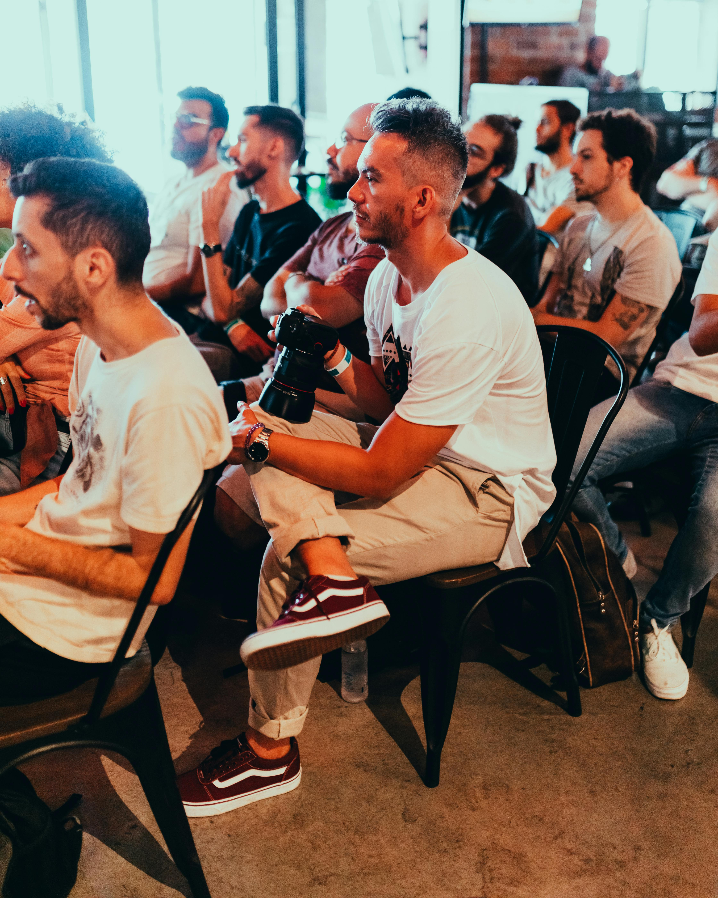

History
TechCon was founded to bring together the brightest minds in technology, fostering collaboration, innovation, and growth within the industry. Over the years, it has become a pivotal event where cutting-edge ideas and breakthrough technologies are shared.

Mission
Our mission is to inspire and innovate by connecting tech enthusiasts, professionals, and pioneers from around the world. TechCon seeks to empower individuals and companies to push the boundaries of what's possible in technology.

Past Speakers
Notable past speakers include renowned tech leaders who have made significant contributions to the industry. These speakers have shared valuable insights and inspired future generations of innovators.

Speaker 1: Known for groundbreaking work in AI, Speaker 1 has paved the way for advancements in machine learning.
Speaker 2: A pioneer in cybersecurity, Speaker 2 has contributed significantly to secure online infrastructure.